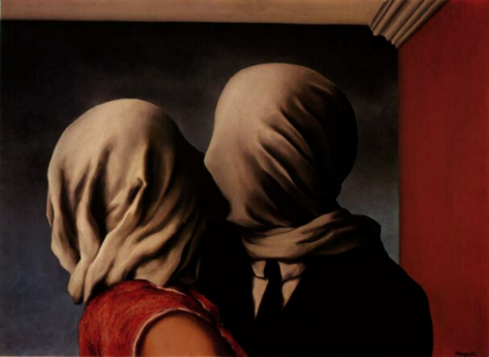

Questa immagine sarebbe stata sicuramente interessante per Freud: il tema, ricorrente in Magritte, del volto coperto da un telo deriva probabilmente da un avvenimento che sconvolse l'infanzia del pittore belga. Sua madre, suicidatasi quando il giovane Renè aveva 12 anni, fu ritrovata in un canale col volto coperto da un asciugamano.